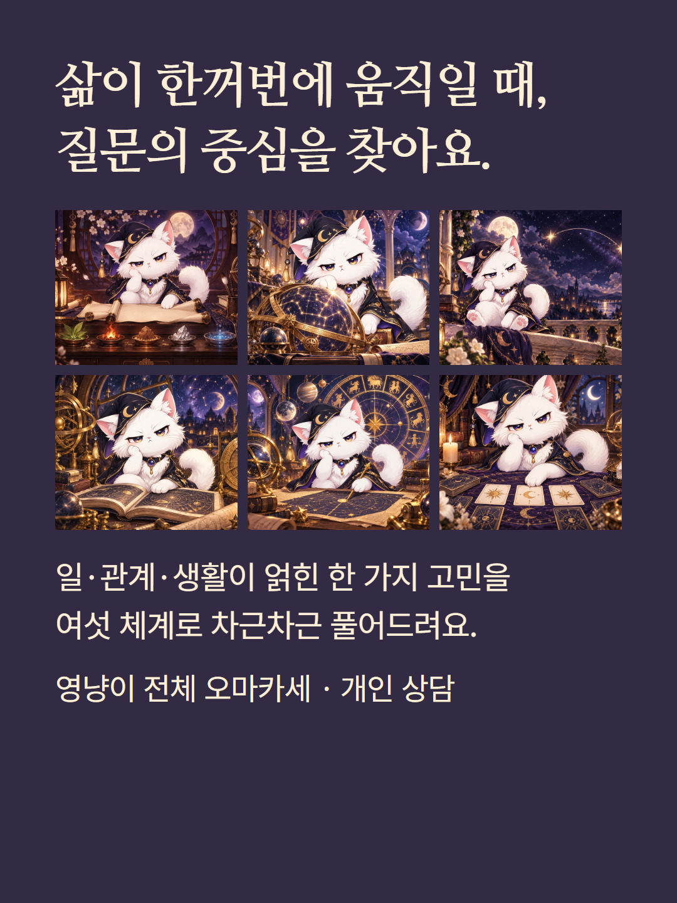
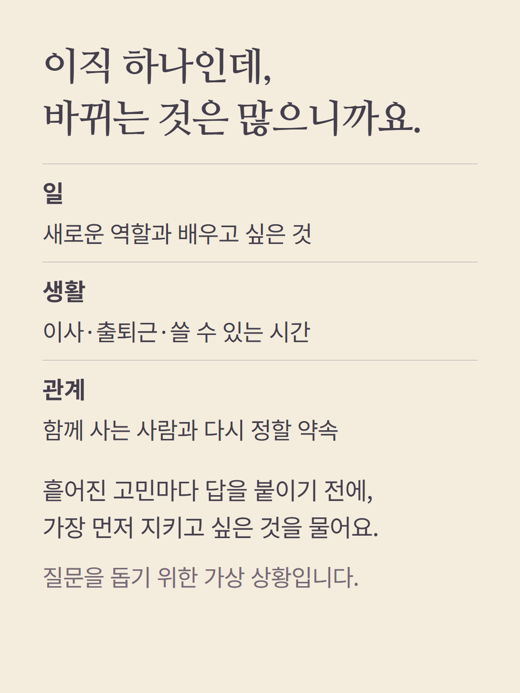
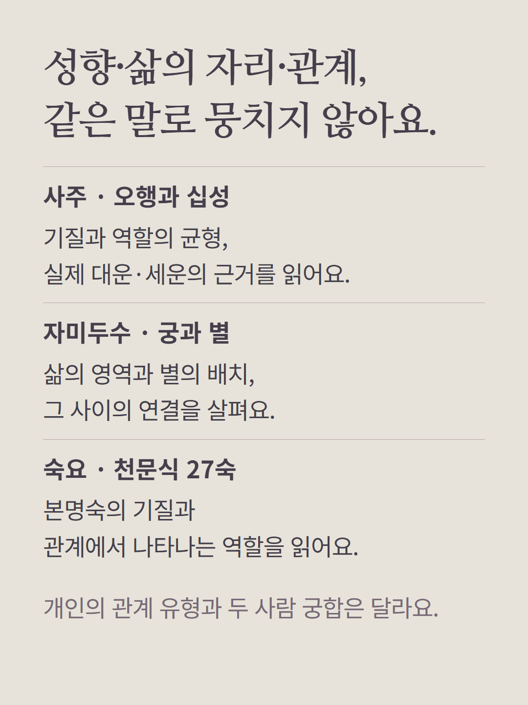
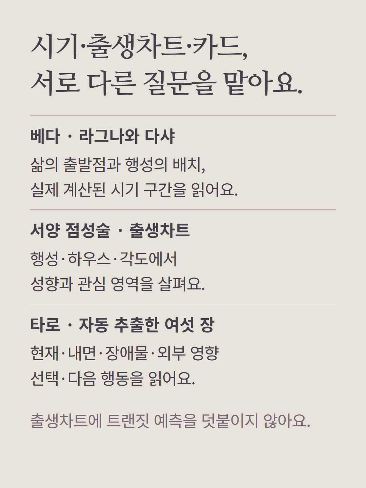
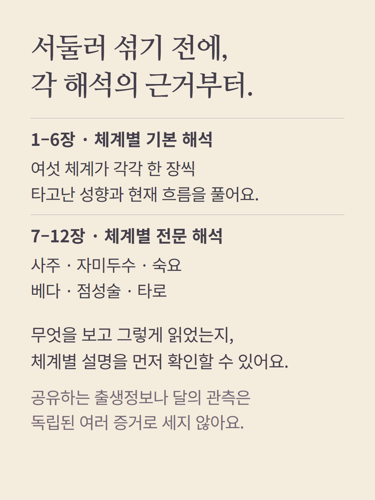
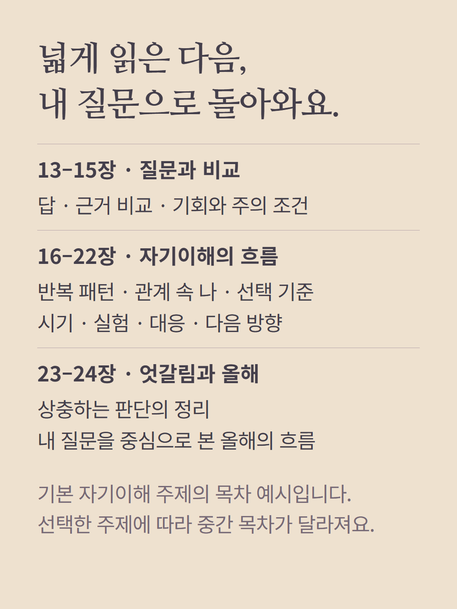
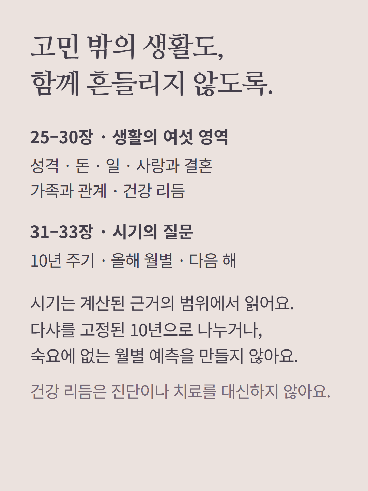
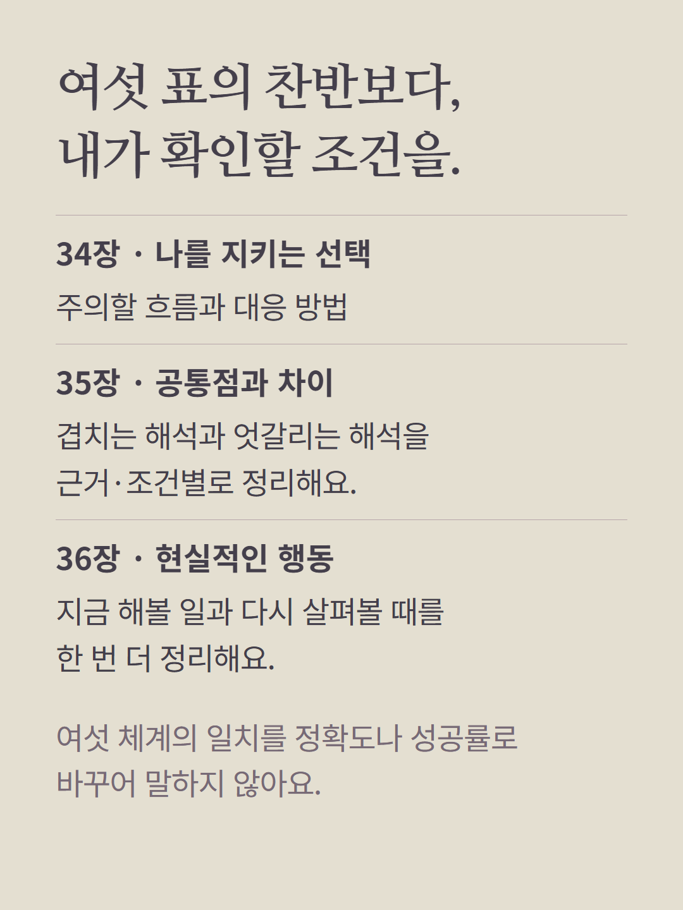
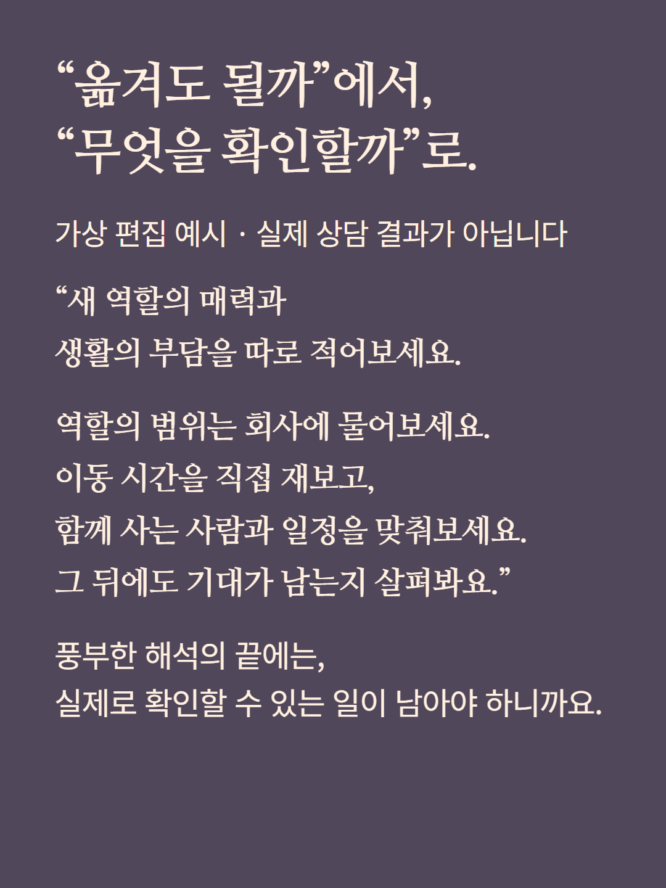
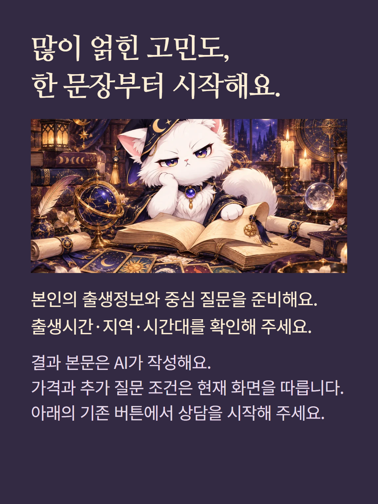

사주·자미두수·숙요·베다·서양 점성술·타로를 체계별로 구분하는 36장 개인 상담입니다. 여섯 해석은 독립된 여섯 개의 검증이나 정확도 점수가 아닙니다. 출생시간·지역·시간대가 필요하며 타로는 자동 추출한 6장을 사용합니다. 현재 목차는 기본 자기이해 주제의 예이며 선택 주제에 따라 일부가 달라집니다. 실제 계산 근거가 없는 시기나 상대 마음을 확정하지 않습니다. 예시는 가상 편집, 결과 본문은 AI 작성입니다. 가격과 추가 질문 조건은 기존 화면을 따릅니다.